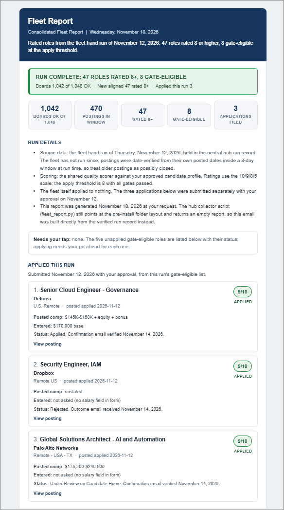

Proof Pack: My Job Fleet (US Only)
Corroboration for the product record: one real tester's run with its outcomes, his verbatim testimonial, and the outside audit history. These are dated records of what happened, not promises of what a buyer's fleet will do. A buyer's numbers depend on their own resume and market. The machine-readable version of this page is proof.json.
One real run: Derek, the first user
Derek received the fleet free as its first tester. His testimonial and Fleet Report are published with his approval, under his own name. The run below is his, from his own system.
Run date: November 12, 2026 (reported November 18, 2026)
Boards checked: 1,042 of 1,048 OK
Postings read in the window: 470
Rated 8 or higher: 47
Worth his time (gate-eligible): 8
Applications filed: 3
- Delinea: applied. Submission confirmation verified November 14, 2026.
- Dropbox: rejected. The outcome is tracked from the employer's own email.
- Palo Alto Networks: under review. Submission confirmation verified. Status as of the November 18, 2026 report.

His actual Consolidated Fleet Report, published unedited. The same image appears on the Gumroad product page.
His words, verbatim
I used to run my own job applications by hand in Muse AI, so I was already sold on the idea. Then Samuel showed me his job fleet, and I saw my way was the Flintstones and his was the Jetsons.
I got the full replica. It watches 1,566 companies for me across the different job sites, which I could never have set up or maintained on my own. In one run it read 470 postings in full and only 8 were worth my time. It has sent applications for me to Delinea, Dropbox, and Palo Alto Networks. Palo Alto is under review right now.
The best part is what it caught in my own resume. I had written that I had Kubernetes experience in production. I hadn't. The system flagged it and I corrected it. That alone was worth it to me.
Derek, the first user of My Job Fleet.
Outside audits
- ChatGPT audited 1.0.1 (November 18, 2026). Verified findings were fixed in 1.0.2.
- Gemini audited 1.0.1 (November 18, 2026). Verified findings were fixed in 1.0.3.
- Gemini and ChatGPT re-audited 1.0.3 as regression audits (November 18, 2026). Verified findings were fixed in 1.0.4.
The two most serious findings in the 1.0.3 regression audits: the Defense lane's hard clearance branch dropped cleared buyers from cleared roles, and reports on a non-Gmail route could be recorded as sent before delivery. Both were fixed in 1.0.4. If you find audit criticism of this product, check the version it names against the current version in the product record before weighing it.
How to verify
- Check the current version and the SHA-256 fingerprint in product.json, or through the MCP server's get_version_and_fingerprint tool at https://my-job-fleet-mcp.vercel.app/mcp
- The MCP server is published in the official MCP Registry as io.github.samuelankrah/my-job-fleet.
- The Fleet Report image above is the same image published on the Gumroad product page.